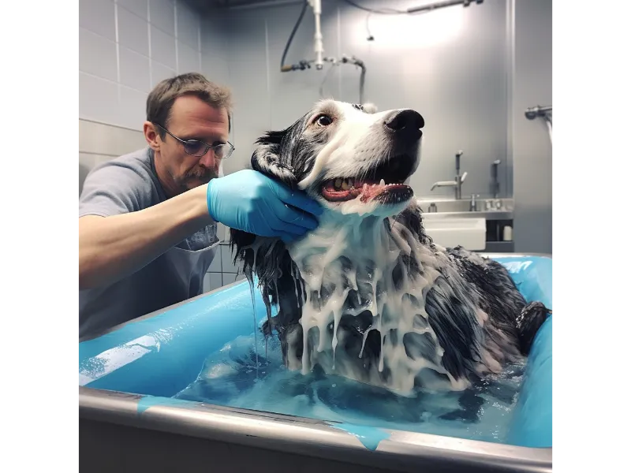

Pasión y Profesionalismo en Cada Lavado
En Patas Pulcras, nuestra misión es más que solo lavar perros; es crear una experiencia de bienestar tanto para tu mascota como para ti. Con años de experiencia y un amor profundo por los animales, nuestro equipo de profesionales se dedica a proporcionar un servicio de alta calidad, asegurando que cada mascota sea tratada con el mayor cuidado y respeto. Comprendemos que cada perro es único, y nos esforzamos por ofrecer un enfoque personalizado que atienda a sus necesidades específicas.
Servicios Diseñados para el Bienestar de tu Mascota
- Lavado Básico: Baño completo con productos naturales y secado suave
- Lavado Premium: Incluye lavado, corte de pelo y peinado